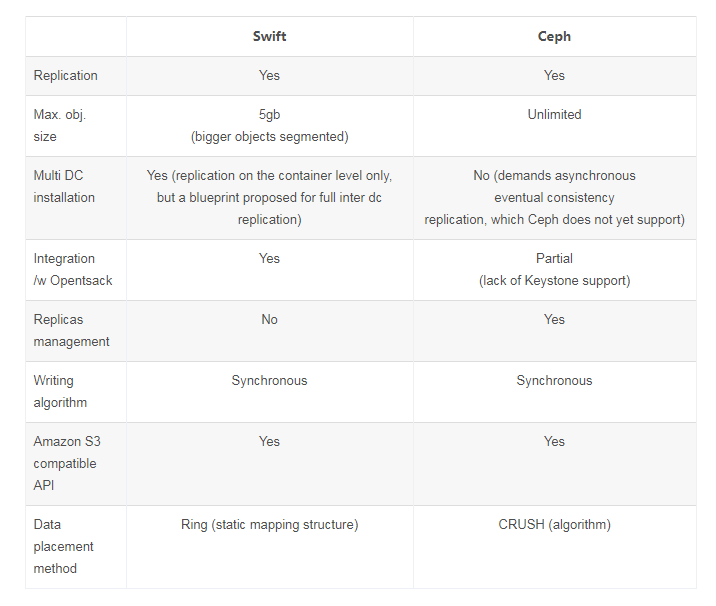

滴雨科技为什么选用Ceph的对象存储
以下针对Ceph和Openstack的swift在对象存储服务的对比
Swift和Ceph都提供对象存储，将数据分割成二进制对象并将其复制到存储中。使用Ceph和Swift，对象存储都是在Linux文件系统之上创建的。此外，Ceph和Swift都是在考虑可伸缩性的情况下构建的，因此可以很容易地根据需要添加存储节点。
两者的不同之处主要在于：
访问数据
Swift是由Rackspace开发的，目的是为该公司的云提供可扩展存储。因为它是基于云开发的，所以它的主要访问方法是通过RESTful API。应用程序可以直接对Swift寻址(绕过操作系统)并将数据提交给Swift存储。这在纯基于云的环境中非常有用，但它也使访问云外的快速存储变得更加复杂。
至于Ceph，从一开始，其开发人员就致力于使其成为一个比Swift更开放的对象存储系统。Ceph有四种访问方法:
·通过Rados网关访问Amazon S3兼容的RESTful API:这使得Ceph可以与Swift相媲美，也可以与Amazon S3云环境中的任何东西相媲美。
·CephFS:这是一个可移植操作系统接口兼容的文件系统，运行在任何Linux发行版上，所以操作系统可以直接访问Ceph存储。
·Rados Block Device (RBD): RBD是一个Linux内核级的块设备，允许用户像访问其他Linux块设备一样访问Ceph。
·ISCSI 网关:这是SUSE对Ceph项目的补充。它允许管理员在Ceph上运行iSCSI网关，将其转换为任何操作系统都可以访问的SAN文件。
因此在对比评估Ceph与Swift时，Ceph提供了更多访问对象存储系统的方法。正因如此，它比Swift更实用、更灵活。
访问存储信息
Ceph与Swift截然不同的另一个方面是客户端如何访问对象存储系统。在Swift中，客户端必须联系Swift网关，这会带来一些潜在的单点故障。为了解决这个问题，许多Swift环境为Swift网关实现了高可用性。
Ceph使用一个对象存储设备(OSD)，运行在每个存储节点上运行。Ceph可以通过OSD获取关于存储拓扑的信息，以及在哪里收集二进制对象以访问原始数据。访问对象存储所需的另一个组件在客户机上运行。
因此Ceph对存储的访问没有一个单独的入口点。这使得它比Swift更灵活。
关于用例
Ceph在需要高度一致性的虚拟机、数据库和其他数据类型交互的单站点环境中表现良好。
Ceph数据在整个集群中是强一致的，而Swift数据是最终一致的，它通过在软件层面引入一致性散列技术和数据冗余性，牺牲一定程度的数据一致性来达到高可用性和可伸缩性，在跨集群同步数据之前可能会需要一些时间。
Ceph与Openstack的swift对比
在Ceph 中，对象存储在Ceph 对象存储设备(OSD) 中。，由于Ceph 中的代码库以C++ 为主，客户端可以直接和OSD 通信， 免除了代理服务的需要，因而性能更优化;
Ceph 中的一致性模型由RADOS 网关来实施，它提供了强大的一致性。强大的一致性意味着新的和更新的对象写入到所有磁盘，然后才为客户端所见;
Ceph 的用例包括镜像存储、备份服务，以及文件存储和共享;
Ceph 网关(即RADOS 网关)是对象存储接口。它为应用提供了RESTful 网关，支持Amazon S3 和OpenStack Swift;
Ceph 的1目标不仅仅是提供对象存储;
Ceph 将相同的存储集群用于对象存储、 块存储和基于文件的数据存储。
综上所述，Ceph与Swift这两种对象存储系统，优劣是非常明显的，尤其在我们的边缘计算里面，Ceph的优势更加明显。所以我们将Ceph作为作正向开发融合的基石。